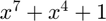

Scrambling
Shuffle the data with an initial seed.
Contents
Syntax
SData = scrambleString(data,initial_state)
Description
The scrambleString(data,initial_state) function returns a vector of scrambled bits where there are not long sequences of logical 1s in the binary data. The polynomial generated is S(x) and the scramble performs an XOR operation between the input bit, bit of the fourth position and bit of the seventh position, two by two and returns the result as output of the scrambler, according to the IEEE 802.11 standard.

Input Arguments
- data
Data bits vector.
- initial_state
Initial status of scrambler
Output arguments
- SData
Randomized resulting bit array.
Examples
The function scrambleString(datos, estadoInicial) is called.
function SData = scrambleString(data, initial_state)
The bits pass one by one through a scrambler with a generator polynomial according to the IEEE 802.11 standard.

SData = zeros(1, length(data));
state = initial_state;
for i=1:length(data)
XOR(X4 , X7) is the exit status.
stateS = xor(state(4),state(7));
XOR(INPUT, XOR(X4 , X7)) is the system output
SData(i) = xor(stateS, data(i));
Circular shift to move in one position
state = circshift(state, 1,2);
Replace the first item with the previous exit status
state(1) = stateS;
end
end
See also